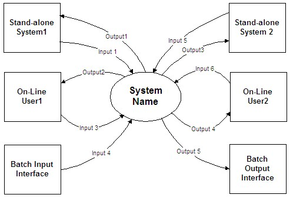

| Artifact: System Context (ART 0651) |
 |
|
The purpose of this work product is:
|
| Main Description | Usually shown as a diagram, the System Context work product representation defines the system and identifies the information and control flows that cross the system boundary. The System Context highlights several important characteristics of the system: users, external systems, batch inputs and outputs, and external devices.
The objects within the system boundary define the scope over which the development team has some control. The users and systems outside the boundary of the system are those that affect the system operation and development but are beyond the control of the developers within the currently defined scope of the project. Due to this scoping aspect of the work product, during early stages of a project it is useful to review this work product with the client to assist in delineating development team and client responsibilities. Note that the System Context may limit the breadth of its coverage to emphasize just one class of external interfaces, for example, only the interfaces to external systems. Additionally, the details required at lower levels of elaboration will depend upon what interfaces are to be subsequently developed. |
|---|---|
| Notation | The diagram below shows information flow into and out of the system. Note that in an actual diagram instance, each information flow would be labeled with a descriptive name to help the reader understand the purpose of the interface. Each flow then should be described in more detail in narrative form to supplement the diagram. At a minimum, the following information should be provided for each flow:
 |
| Templates |
|---|
The following guidance is suggested:
|
| Reasons for not needing | The System Context need not be developed in the following circumstances:
|
|---|---|
| Representation Options | Several notations can be used to diagram the component of System Context. Most often they are represented as a level-0 process model, although static object models or functional models can represent them. Diagrams are generally better than text for this kind of overview material. |
| Tool Mentors | |
|---|---|
| Whitepapers | |
| Estimation Considerations |
| © Copyright IBM Corp. 1987, 2012 All Rights Reserved Property of IBM These materials are intended only for use as part of an IBM engagement |